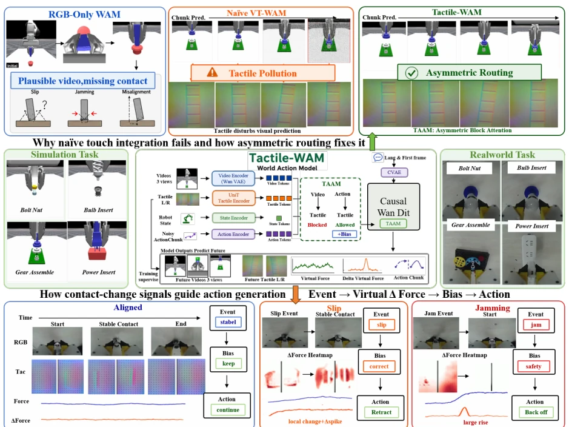
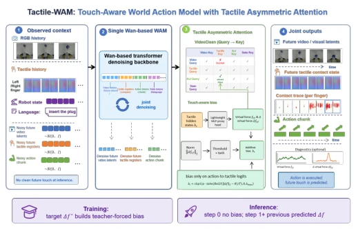
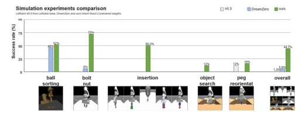
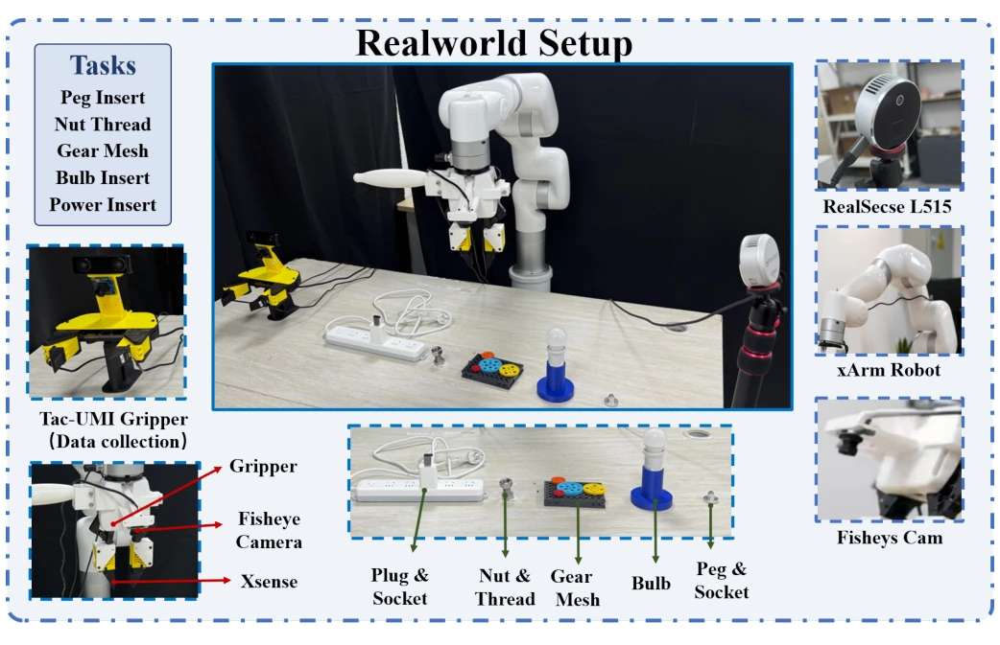
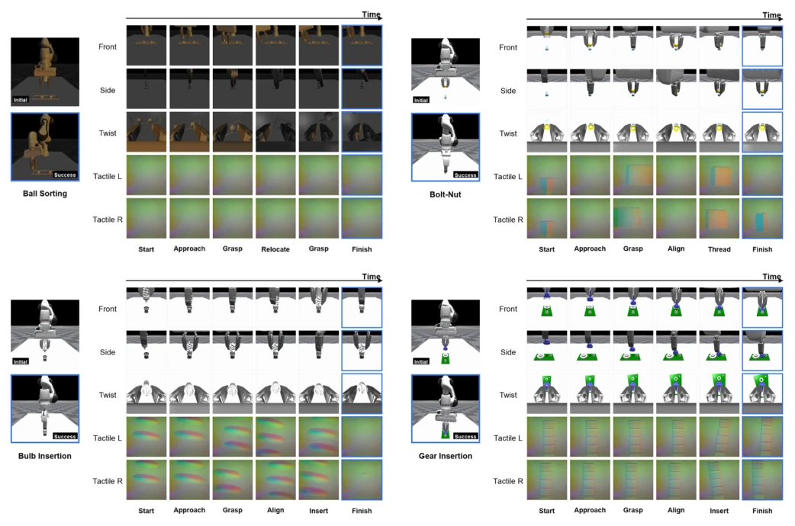
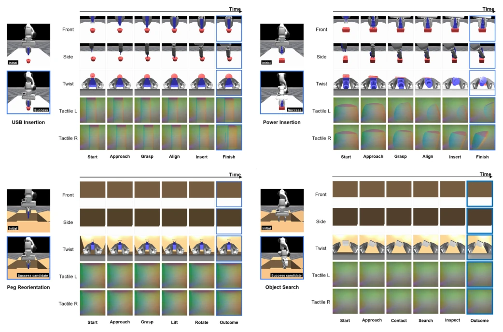
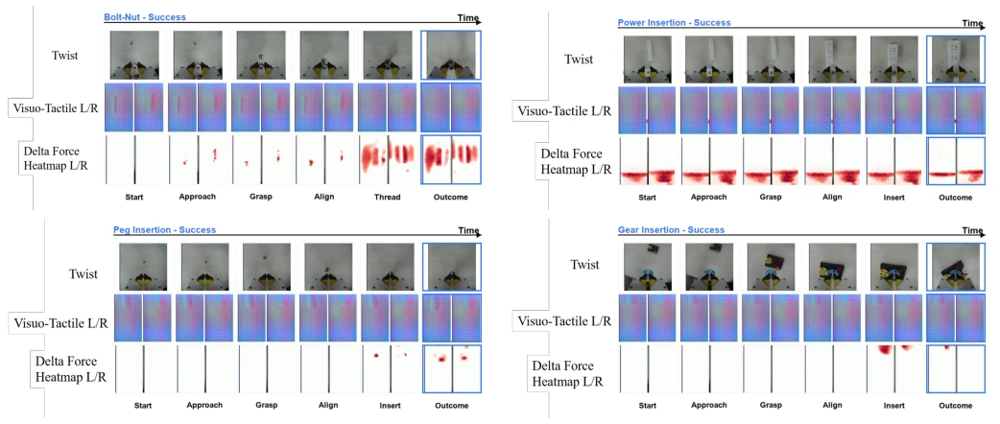
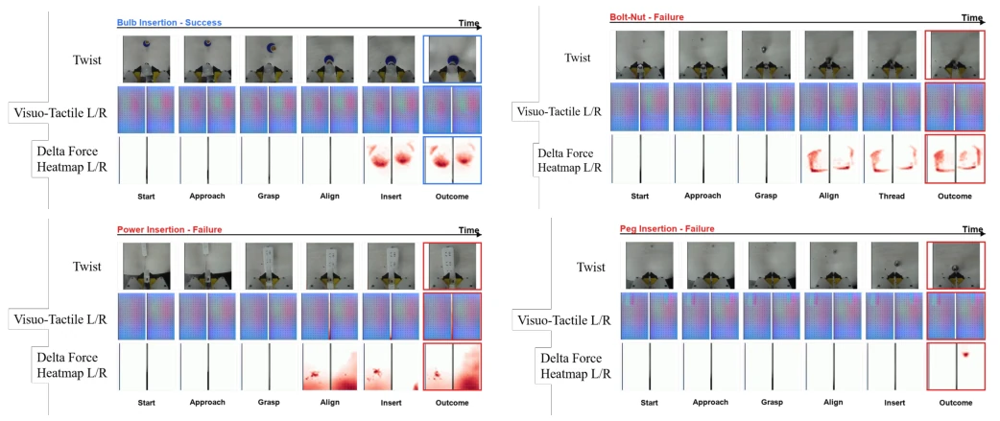
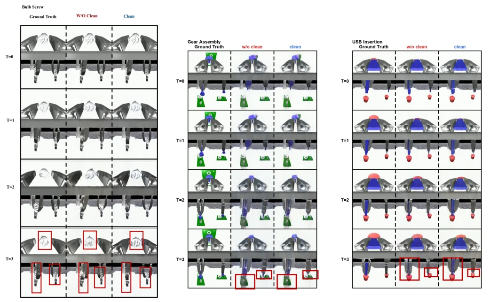

This paper pours cold water on tactile world models (WAM) and also hands over a towel. The authors keenly point out that simply throwing tactile tokens into a vision pre-trained model is like throwing sand into a precision camera—"tactile pollution" will cause video prediction to collapse. The core of Tactile-WAM lies in "asymmetric attention" (TAAM), using a VIDEOCLEAN mask to physically isolate tactile and visual prediction paths, allowing only the action generation channel to "consume" tactile signals. This move is clever, preserving visual dynamic priors while utilizing tactile signals to correct actions. However, do not celebrate too early; its tactile supervision still relies on motion proxies rather than true force control, belonging to a "pretending to know force" smart approach. On ManiFeel simulation and physical robots, contact task success rates skyrocketed, but search and long-horizon planning remain blind spots. Overall, this is an "surgical operation" on the architecture, excising the pathology of multimodal fusion, but not solving the fundamental accuracy problem of tactile perception.
Existing visual world action models (WAM) can generate realistic future frames, but appear "blind" in contact-rich manipulation tasks. Tasks such as insertion, assembly, and search highly rely on physical states like sliding, jamming, contact normal, etc., which are often invisible or severely occluded in RGB [19]. Although existing work attempts to introduce tactile, such as Visuo-tactile world models [5] or Dream-Tac [10], most allow tactile tokens to freely participate in all attention paths. The authors point out this leads to "tactile pollution": sparse, local tactile events force the visual dynamics model to absorb weak prediction signals, destroying video prediction quality. Furthermore, existing models lack perception of "when tactile is important," often merely passively receiving tactile tokens, rather than utilizing changes in contact states (such as first contact, sliding onset) to guide actions. Therefore, how to let tactile precisely correct actions without destroying visual priors is the core pain point this paper aims to solve.

Fig. 1. RGB-only WAMs can generate visually plausible futures, but contact state can remain underdetermined: slip, jamming, local misalignment, and incorrect contact normals may be weakly visible, occluded, or absent from RGB. Tactile-WAM predicts future tactile contact states and uses TAAM, combining a VIDEOCLEAN mask with a touch-aware bias, so that touch informs action correction without unconstrainedly perturbing video prediction.
Tactile-WAM is based on a denoising backbone network compatible with Wan/WAM, jointly denoising future visual tokens, tactile contact tokens, and action chunks. Its core innovation lies in the tactile asymmetric attention mechanism (TAAM), containing two key modules. First is the VIDEOCLEAN mask, which forcibly blocks video-query access to tactile key/value, but retains action-query access to tactile. This is like installing "bulletproof glass" on the visual prediction path, preventing sparse tactile signals from contaminating visual dynamic priors. Second is the touch-aware bias, which does not directly scale features, but adjusts action attention based on predicted tactile change amount (touch-change proxy). Specifically, the model distills tactile state proxies and tactile change proxies from tactile image motion; during the denoising process, when contact state step changes are predicted (such as jamming, sliding), the bias enhances action token attention to tactile anchors. During training, teacher-forcing is used to employ target proxies; during inference, proxies predicted from the previous time step are used. This design ensures tactile intervenes only at critical moments of action correction, rather than interfering with visual generation throughout.

Fig. 2. Method overview. Tactile-WAM jointly denoises future visual tokens, tactile contact tokens, and actions. TAAM routes touch selectively: VIDEOCLEAN protects video prediction from tactile tokens, while the touch- aware bias guides action denoising using predicted touch changes.
Experiments are conducted on the ManiFeel simulation benchmark and physical robot platforms. Simulation includes 9 tasks, comparison baselines include RGB-only DreamZero WAM [19] and π0.5 policy [14]. Results show Tactile-WAM overall success rate increased to 44.7%, reaching up to 87.5% on contact-intensive tasks (such as bolt-nut assembly, gear insertion), far exceeding DreamZero's 5.8%. Ablation studies confirm that adding tactile tokens alone leads to performance drop (1.3%), recovering to 4.9% after adding VIDEOCLEAN, while the full model (with proxies and bias) reaches 44.7%, proving the necessity of TAAM components. Furthermore, RGB prediction quality (MSE/PSNR) also significantly improved after introducing VIDEOCLEAN, verifying its effectiveness in alleviating tactile pollution. Physical robot experiments achieved 51% success rate on 5 contact tasks, further verifying simulation-to-reality transfer capability, but still have limitations in search and long-horizon recovery tasks.

Fig. 3. Main results. The tactile WAM variant substantially improves contact-centric insertion and assembly tasks, especially bolt-nut assembly, gear insertion, power insertion, and USB insertion. Full per-task counts and the earlier evaluation run are provided in Appendix C-B.
其他图片Other Figures

Fig. 4. Real-robot setup. The evaluation covers five contact-rich tasks: peg insertion, nut threading, gear meshing, bulb insertion, and power insertion. The setup uses an xArm robot equipped with a Tac-UMI-style gripper, external RealSense L515 sensing, and gripper-mounted fisheye/tactile observations. The task fixtures include plug-and-socket, nut-and-thread, gear-mesh, bulb, and peg-and-socket assemblies.

Fig. 5. Qualitative process visualizations for ManiFeel simulation tasks, part I. Each panel shows task execution over time with multi-view RGB observations and left/right tactile observations.

Fig. 6. Qualitative process visualizations for ManiFeel simulation tasks, part II. These examples further illustrate the visual and tactile observation streams used in contact-rich manipulation.

Fig. 7. Qualitative real-robot process visualizations, part I. Each panel shows a real execution sequence over time with gripper-mounted RGB observations, left/right visuo-tactile observations, and left/right delta-force heatmaps. The visualizations illustrate how local contact signals evolve during contact-rich manipulation.

Fig. 8. Qualitative real-robot process visualizations, part II. These examples further show the temporal evolution of visual, tactile, and delta-force observations during real-world contact-rich manipulation.

Fig. 9. Qualitative comparison of decoded RGB predictions with and without VIDEOCLEAN. Each panel compares non-clean visuo-tactile prediction against the VIDEOCLEAN variant on the same real-robot sequence. Red boxes highlight regions where tactile pollution introduces visual artifacts or geometry distortions, while the clean variant better preserves gripper and object structure.